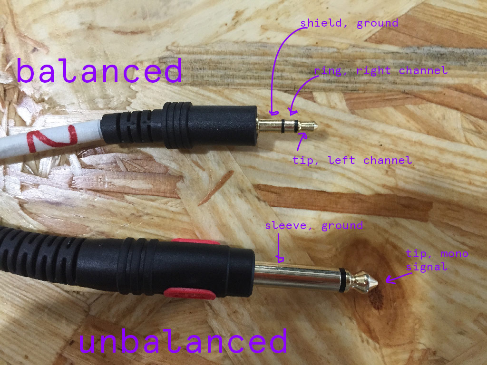

Digital Audio
WAV, MP3, BWF
Waveform Audio File Format - lossless, supported by HTML5 audio, relatively large file size
MPEG-1 or MPEG-2 Audio Layer III - lossy, small file size, popular on web, file sharing
Broadcast Wave Format - extenion of WAV, used in motion picture, radio and television

Audacity overview
- Download Audacity
- File types
- Input, output
- Basic tools
- Playback
- Move tool
- Cut, selection
- Zoom
- Volume envelope
- Track views
- Effects
- Exporting
- Tutorials